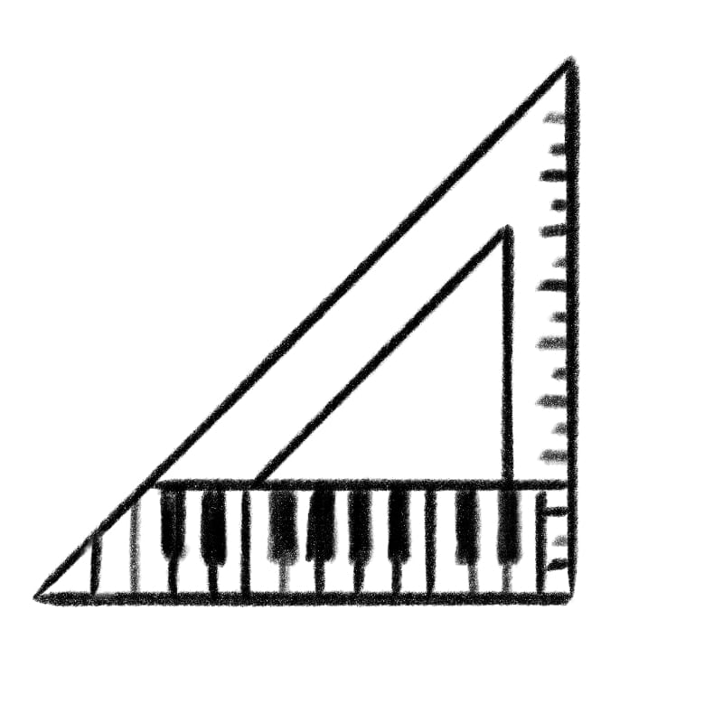

PROJECT MONOCHORD
Turn graph values into an audio file for your next lesson.
Paste comma- or tab-separated rows, or a public Google Sheets link. Enter 1–64 finite numbers; their relative values set the chord roots.
Export a stereo WAV file, ready to add to your slides.
On webpages, select numbers and press Alt + M or right-click the selection. Made for accessible, sound-first learning.